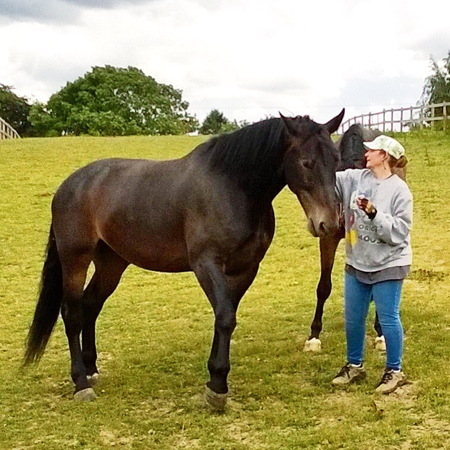

Kimberly A Maturo-Hilt
About
Portfolio
Contact
About Me

Kimberly Kim
Maturo-Hilt, is returning to instructing after 30 years. Kim, and her horses joined the Cornerstone family via Copenhagen, Denmark, California and Colorado. Kim is an all-round rider, who showed on the Quarter Horse circuit, New England region, during her early riding career. She will return to the show ring during the 2018 season, with her new AQHA prospect, Luke Whos Swooning, also known as Duke or Pookie.
Kim has won numerous awards and competitions during her riding career spanning from champion at local training shows to all-round AQHA state champion. Kim has always had a passion for horses and although a late bloomer to riding in general, her passion, dedication and continuous hard-work allowed her to accomplish great success in her early competition career. She was a certified riding instructor for 2+ years focused on beginner / junior hunters, western pleasure / equitation and introduction to horses and riding for beginner adults. Although, school and her professional career has been a priority the past years, working with horses in some fashion has always been a constant in her life.
On a personal level, Kim is stronger believer in giving back and has served as a volunteer from Equine Camp Counselor, Girl Scout Leader to Therapeutic Riding Counselor most of her life. It is the passion for giving back, that has Kim returning to instructing and joining our Cornerstone Riding Academy. In Kim's own words
"Coaching is not solely about technical instruction. Coaching is about being a mentor, a positive role-model and helping students build skills and more importantly confidence. Horses are merely the conduit in helping them to find and develop the best part of themselves."
Bringing the passion for horses, the all-round riding experience and the deep beliefs of what it means to be a coach together, makes Kim a welcomed fit to the Riding Academy. Kim will focus primarily on our Western Pleasure / Equitation program and on our beginner English students. Kim will continue to volunteer at our programs and clinics offered at Cornerstone:
- Equine Camp
- Women's Strong
- Equestrian Club
Kim is in-process of certification with ARIA (American Riding Instructor Association) aiming to complete respective certifications by end of 2018.
© Copyright